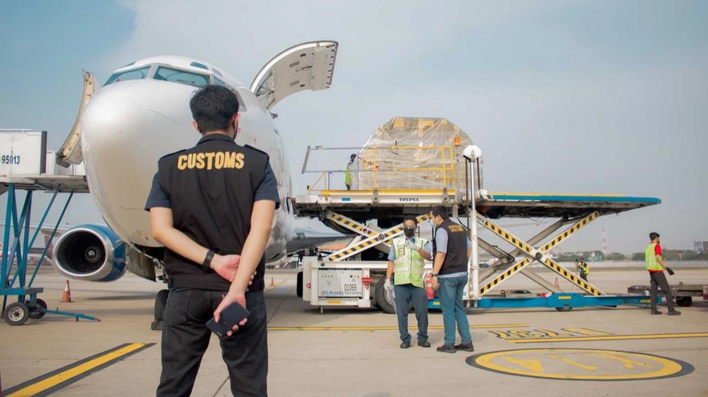
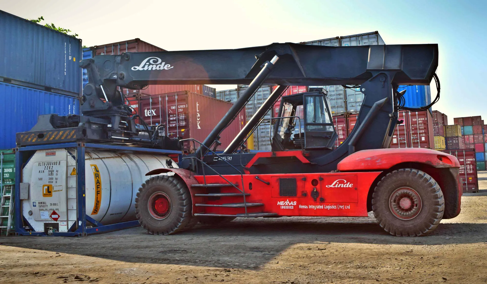

Freight Forwarding & Logistics Services in Surabaya
From first booking to final delivery, PT Sarana Indah Logistic helps businesses move export, import, and domestic cargo through Surabaya with clarity and care. Explore our services below, or tell us about your shipment and we will recommend the right solution.

Freight Forwarding Surabaya
Jasa freight forwarder Surabaya untuk ekspor, impor, dan domestikThink of us as your logistics control tower. We plan the route, book space with shipping lines and carriers, prepare the paperwork, and coordinate every handover, so you deal with one responsive team instead of chasing several parties.
- Route and transport mode planning (sea or air)
- Booking with shipping lines and airlines
- Shipping documents support
- Coordination of trucking and customs clearance
- Shipment updates until arrival
Ideal for: Exporters, importers, and businesses shipping within Indonesia that want a single point of contact.
Ask About Freight Forwarding
Sea Freight Surabaya (FCL & LCL)
Jasa pengiriman laut FCL & LCL dari SurabayaSurabaya is one of Indonesia's busiest trade gateways, and sea freight is the backbone of our service. We move containerized cargo to domestic and international destinations through leading shipping lines including Evergreen, OOCL, COSCO, ONE, Gold Star Line, KMTC, and CMA CGM.
- FCL: full container loads for larger shipments
- LCL: shared containers for smaller volumes
- Reefer containers for frozen and chilled goods
- Oversize and heavy cargo
- Export, import, and domestic routes
Ideal for: Wood products, frozen fish and shrimp, paper, charcoal and briquettes, and general cargo.
Ask About Sea Freight
Air Freight Surabaya
Jasa pengiriman kargo udara dari SurabayaWhen the clock is ticking, air freight gets your cargo there fast. We arrange bookings and documentation for urgent and high-value shipments, so your goods leave on schedule and arrive when you need them.
- Air cargo booking and scheduling
- Air waybill and export-import documents support
- Domestic and international destinations
- Coordination with customs clearance and delivery
Ideal for: Urgent, high-value, and time-sensitive shipments.
Ask About Air Freight
Customs Clearance Surabaya
Jasa kepabeanan ekspor impor SurabayaPaperwork should never hold your cargo hostage. We help prepare and process customs documents for export and import shipments, so your goods clear smoothly and in line with regulations.
- Export and import customs processing
- Document checking (invoice, packing list, bill of lading or AWB)
- Guidance on customs requirements
- Coordination with ports and terminals
Ideal for: First-time exporters and importers, and anyone who wants to avoid delays caused by document errors.
Ask About Customs Clearance
Trucking Surabaya
Jasa trucking dan angkutan darat SurabayaGreat logistics doesn't stop at the port. Our trucking service connects your sea and air shipments with land transport, moving containers and cargo to and from the port and onward to their destination.
- Container trucking to and from the port
- Land transport coordinated with your sea or air shipment
- Scheduling aligned with vessel and flight departures
- Delivery coordination to the destination
Ideal for: Shippers who need reliable land transport linked to their export, import, or domestic shipment.
Ask About Trucking
Cargo Handling Surabaya
Jasa bongkar muat dan penanganan kargo SurabayaCareful handling protects your cargo and your reputation. We coordinate loading, unloading, and container stuffing so your goods are properly secured before they ship.
- Loading and unloading
- Container stuffing and unstuffing
- Cargo checking and securing
- Coordination of temporary storage through partner facilities
Ideal for: Shipments that need careful handling, including heavy and oversize cargo.
Ask About Cargo HandlingHow We Work
Simple, Clear, and Hands-On
Tell us about your cargo
Message us on WhatsApp or use the quote form with your origin, destination, and cargo details.
Get a tailored quote
We propose a route, schedule, and rate that fits your cargo and budget.
We handle the shipment
Booking, documents, customs, and trucking are coordinated by one team.
Stay updated to arrival
We keep you informed until your cargo reaches its destination.
Not sure which service fits your shipment? Tell us what you are sending and where it needs to go, and we will point you in the right direction.
Chat With Us Request a Quote